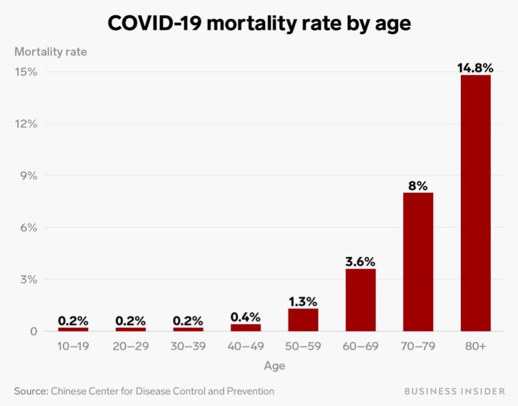

- Ja, die Lage ist ernst!
- Nein, CoViD-19 ist nicht mit einer gewöhnlichen Grippe zu vergleichen, nicht mal im günstigsten Fall
- Die Infektionswelle ist auch bei uns angekommen
- Das Gesundheitssystem
- Meta-Talk über Gesundheitspolitik
- Es gibt aber Hoffnung und jeder kann etwas dazu beitragen!
- Erlaubt
- Händewaschen
- In Kontakt bleiben, aber größere Gruppen meiden**
- Senke dein Gesamtrisiko
- Grippe- und Pneumokokken-Impfung nachholen
- Arztbesuche
- Jede nicht zwingend notwendige Reise absagen
- Vorräte anlegen
- von zu Hause aus arbeiten
- Einen “Plan B” für die Betreuung von Kindern, Menschen mit besonderen Bedürfnissen und Haustieren erarbeiten – am besten mit einer Krisen-Freundschaft (“pandemic pal”)
- Sozialkontakte pausieren lassen
- Dein Zuhause
- Nicht nur an sich selbst denken
- Sicherheitszone zu Hause
- Sag es allen weiter!
- Verboten
- Warte nicht ab
- Nicht ins Gesicht fassen
- Sei auf der Hut
- Öffentliche Veranstaltungen
- Bitte keine Atemmasken bunkern
- Kein Händeschütteln. Werde kreativ mit Begrüßungen ohne Körperkontakt.
- Berühre keine Oberflächen in der Öffentlichkeit
- Wenn Du krank bist
- Vorher anrufen
- Verbreite keine Falschinformationen
- Sei nicht unvorsichtig
- Sei nicht rassistisch
- Sei anwesend, kein Dauerglotzen der Nachrichten
- Über den Autor
- Zugehörigkeiten
- Wem Du folgen kannst, wenn Du Dich mehr für den Wissenschaftlichen Hintergrund interessierst
- Wie Du helfen kannst
Coronavirus (COVID-19)
Update und Leitfaden
aktualisiert Mar 16, 2020 7:06 PM (UTC)

Du kannst diese Seite über Facebook, Twitter oder die Web-Adresse www.flattenthecurve.com teilen. Bitte beachte, dass sie sich weiterentwickelt. Geschwindigkeit ist entscheidend, und ein guter Plan jetzt ist besser als ein perfekter Plan später. Wenn Du beim Übersetzen helfen willst, lass es mich gerne über das Kontaktformular wissen.
Update: Wir haben einen Email-Newsletter erstellt, damit Du immer auf dem neuesten Stand bleiben kannst, was COVID19 und die Bemühungen angeht, das Kurvendiagramm flach zu halten (#FlattenTheCurve). Du kannst hier klicken, um ihn zu abonnieren (Keine Werbung oder geschäftliche Zwecke und umsonst!)
Ja, die Lage ist ernst!
Ruhig bleiben, nicht in Panik verfallen. Aber: auch auf keinen Fall die öffentlichen Warnungen und Empfehlungen einfach vom Tisch wischen!
Wir haben den Vorsprung, den wir zur Vorbereitung auf die Infektionswelle mit Blick auf China hatten, ungenutzt verstreichen lassen. (https://twitter.com/florian_krammer/status/1236344865924972545) Nun haben wir es mit einer Pandemie zu tun. Und trotzdem oder gerade deshalb ist es jetzt wichtiger als je zuvor, entschlossen zu handeln. Nicht irgendwann. Jetzt.
Nein, CoViD-19 ist nicht mit einer gewöhnlichen Grippe zu vergleichen, nicht mal im günstigsten Fall
Die Weltgesundheitsorganisation(WHO) schätzt die Sterblichkeit auf 3,5% durchschnittlich über alle Altersgruppen. Und es liegen umfangreiche Daten vor, die gegen die These sprechen, dass es eine große Zahl an Fällen gibt, die keine oder nur so wenige Symptome entwickeln. Diese würden nicht in die Statistik einfließen und damit läge die Sterblichkeit deutlich unter 3,5%. Es herrscht Einigkeit darüber, dass besonders ältere Menschen (>60 Jahre) und Vorerkrankte (Diabetes, Krebs, Asthma etc.) gefährdet sind.

Im Anfangsstadium der Epidemie gab es die Hoffnung, dass die 3,5% Sterberate eine viel zu hohe Einschätzung sei. Aber mit zunehmend belastbaren Zahlen schwindet diese Hoffnung schon seit dem 25.2.2020.
Die optimistischste Einschätzung basiert auf dem Verlauf in Südkorea, demnach verliefen 0,7% aller Fälle tödlich. Aber erstens liegt das Durchschnittsalter Südkoreas Bevölkerung deutlich unter dem unseren. Und zweitens hat Südkorea von Anfang des Ausbruchs an alles richtig gemacht, nämlich intensiv auf das Virus getestet (z.B. mittels sog. drive-through-Stationen) und gleichzeitig radikale Informationstransparenz und öffentliche Unterstützung geleistet. Falls sich der Corona-Virus so wie andere Viren verhält, könnten außerdem Maßnahmen helfen, die die Virenlast unter die durchschnittliche Menge an für eine Ansteckung benötigtem Material senken.
#Konzentriere dich auf die Hauptsache: #FlacheKurve
Es wurde bisher viel über die tatsächlichen Infektions-, Krankheits- und Sterberaten spekuliert. Aber wir befinden uns noch immer am Anfang der Pandemie und es kann unter Umständen noch Jahre dauern, bis man diesbezüglich gesicherte Zahlen hat.
Was wir aber schon jetzt wissen ist, dass die Zahl der tödlichen Verläufe irgendwo zwischen 0,5% und 4% liegen wird. Und dies ist eine mehr als genügend adäquate Begründung für ein entschlossenes, sofortiges und vor allem vorbeugendes Handeln auf großer Ebene.
Die mit Abstand wichtigste Sache ist es, die Kurve mit der sich die Epidemie ausbreitet, so flach wie möglich zu halten, damit unsere Gesundheitssysteme nicht überlastet werden und zudem Wissenschaftler und Ärzte mehr Zeit zur Entwicklung eines Impfstoffes und von Behandlungsmöglichkeiten bekommen.
Die Infektionswelle ist auch bei uns angekommen
Geh davon aus, dass der Virus schon in Deiner Stadt/ an Deinem Arbeitsplatz/ in Deiner Kirche ist. Er ist garantiert bereits “hier”, aber nur noch nicht entdeckt. Schätzungen aus Italien zufolge war die Zahl der Infizierten im frühen Stadium der Epidemie viermal so hoch wie die Zahl, die man zu der Zeit bestätigen konnte. Die Universitäten von Stanford und Washington haben all ihren persönlichen Unterricht auf Telekommunikation umgestellt. Diesem Vorbild sollten andere Bildungseinrichtungen folgen. Allerdings geht das nicht einfach so, Lehrkräfte brauchen dafür Technologie und Unterstützung. Manche Schulen und Hochschulen sind noch nicht entsprechend ausgestattet oder ihnen fehlt schlicht das Geld. Wir sollten also gerade bei denen, für die so ein Wechsel kein allzu großes Problem darstellt, anfangen. Es gibt zwar nicht die eine Lösung, die für alle funktioniert, aber Geschwindigkeit ist essenziell. Lehrkräfte, wartet nicht, bis eure Administration es insgesamt anordnet. Triff selbst die Entscheidung, so schnell wie möglich. Hier findest Du ein paar Tipps (englisch), wie Du einfacher online unterrichten kannst.
Das Gesundheitssystem
[translation missing]
Meta-Talk über Gesundheitspolitik
Kommt, wenn es ansteht…
[translation missing]
Es gibt aber Hoffnung und jeder kann etwas dazu beitragen!
Nicht aufgeben ist hier die Devise. Jeder Einzelne kann mithelfen, indem er die folgenden Verhaltensrichtlinien beherzigt. Je eher und je mehr Vorsichtsmaßnahmen befolgt werden, je mehr Menschenleben werden geschützt werden. Wahrscheinlich werden die, die gestern noch zu wenig reagiert haben, morgen überreagieren.
[part of translation missing]
Erlaubt
Händewaschen
Mindestens für 20 Sek, mit Seife und warmem Wasser. Viel Reibung sorgt für eine gründliche Reinigung.Diese Lieder können dabei eine Hilfe sein, die 20 Sekunden auch einzuhalten. Anders als hartnäckige Viren wie z.B. der Kinderlähmung auslösende Poliovirus, können Viren der Corona-Familie auf festen Oberflächen typischerweise nicht länger als wenige Stunden überleben, wenn es auch Ausnahmen bis zu Tagen gibt.
[part of translation missing]
In Kontakt bleiben, aber größere Gruppen meiden**
Wo die Umstände es zulassen, sollte man so viel Abstand wie möglich zu seinen Mitmenschen halten. Ein Abstand von 2 Metern ist ein gutes Maß, um das Risiko einer Tröpfcheninfektion klein zu halten. Je stärker die Risikofaktoren
[part of translation missing]
Senke dein Gesamtrisiko
Senke dein Gesamtrisiko durch überlegte Alltagsentscheidungen
Du kannst die Kurve abflachen, indem Du im Alltag wohlüberlegte Entscheidungen triffst, nicht nur nächste Woche, sondern die nächsten Monate.
Bitte achte auf die Anweisungen der örtlichen Behörden, welchen Aktivitäten Du noch nachgehen kannst, am besten vermeidest Du jedoch eine Verbreitung, indem Du jegliche Aktivitäten so weit wie möglich von zu Hause aus betreibst. Wenn Du unbedingt rausmusst: Sportarten ohne Körperkontakt sind besser als solche mit. Beispiel: Tennis ist besser als Fußball Selber kochen ist besser als ein Lieferdienst, Video streamen und von zu Hause gucken ist besser als ins Kino Wenn schon Gemeinschaftsaktivitäten, dann besser draußen als drinnen Gottesdienste und ähnliches werden teilweise auch online angeboten.
Bühnenkünstler werden durch den Virus wirtschaftlich schwer einstecken müssen, denn wir sollten eine Weile auf Live-Auftritte verzichten. Du Du kannst sie aber über geeignete Plattformen unterstützen. Teile ihre Posts auf Social Media, kaufe Ihre Werke online.
Grippe- und Pneumokokken-Impfung nachholen
Grippe- und Pneumokokken-Impfung nachholen
Insbesondere ältere Menschen über 60 Jahren und solche mit Vorerkrankungen sollten unbedingt in Absprache mit ihrem Hausarzt die Grippe-Impfung und eventuell eine Impfung gegen Pneumokokken (Lungenentzündung!) nachholen. Besser spät, als gar nicht. Die Grippe-Impfung schützt zwar nicht direkt vor dem Corona-Virus, aber sie senkt das Risiko einer schweren Komplikation durch eine zusätzliche Erkrankung und damit nötigen Behandlung im Krankenhaus. Und damit vor dem dort herrschenden Ansteckungsrisiko. Auch eine Impfung gegen Pneumokokken kann noch sinnvoll sein. Immerhin ist die eine der häufigsten Komplikationen von CoViD-2 eine Lungenentzündung. Besser spät, als gar nicht. Die
Arztbesuche
Jeden unnötigen persönlichen Arztbesuch vermeiden
Krankenhäuser aber auch Arztpraxen sind Infektionsherde.
Überlege, ob Dein Anliegen akut ist, dass Du zeitnah einen Arzt aufsuchen musst. Falls ja, versuche den entsprechenden Arzt telefonisch zu erreichen und abzuklären, inwiefern ein Besuch notwendig ist. Krankschreibungen für Menschen mit leichten Atemwegserkrankungen können in Deutschland jetzt telefonisch beim Hausarzt eingeholt werden. (Situation in DE, ergänzende Hinweise für andere Länder folgen)
Wie immer gilt: In Notfällen wähle den Notruf 112 (gilt für ganz Europa)
[Das ist gut aber weit weg vom Original, ist das so gewünscht?]
Jede nicht zwingend notwendige Reise absagen
Die Krankheit CoVID-19 kann schleichend beginnen und dann stark beschleunigt Ausbrechen. Wenn Du dann gerade unterwegs auf Reisen bist, kann eine notwendige Versorgung erheblich erschwert sein, selbst wenn sich Deine Erkrankung zu keinem komplizierten Verlauf entwickeln sollte. Ausserdem könnte es passieren, dass Du in Quarantäne kommst, selbst wenn Du gesund bleibst, weil in Deinem Umfeld (z.B. Bahn, Flugzeug, etc.) erkrankt ist. Dort ist dann aber das Risiko,sich zu infizieren, sehr hoch.
[links are missing]
Vorräte anlegen
Vorräte anlegen: nach und nach und vor allem verantwortungsvoll den Mitmenschen gegenüber
Warum „weder so weiter machen, wie bisher“ noch „jede Konservendose im Laden zu kaufen“ sinnvoll ist, erklärt Dr. Emma Hodcroft [hier (https://twitter.com/firefoxx66/status/1233666678841597952?s=20) auf Twitter sehr einleuchtend.
Plötzliche Panikkäufe ergeben keinen Sinn und sind nicht die Idee hinter dem Rat, Vorräte anzulegen. Besser ist es, nicht zu Stoßzeiten einkaufen zu gehen. Immer ein bisschen mehr zu kaufen als man braucht, bis man stetig und überlegt einen gewissen Vorrat vom Nötigsten zu Hause aufgebaut hat. Es wäre auch ein unnötiges (Infektions-)Risiko, in überfüllten Schlangen an der Kasse zu stehen.
Abgefülltes Wasser in Flaschen zu kaufen bietet auch keinen Vorteil gegenüber Leitungswasser. Es ist unwahrscheinlich, dass Leitungswasser von der Situation beeinträchtigt wird. Und im Notfall wäre immer noch ein Abkochen möglich.
Darmsymptome durch den Coronavirus sind sehr selten; Es gibt keinen Grund zu der Annahme, dass die Toilettenpapiervorräte zur Neige gehen. Nimm, was du brauchst. Überlassen Sie den Rest anderen.
von zu Hause aus arbeiten
Falls möglich, so viel wie möglich
Wer die Möglichkeit dazu hat, sollte von zu Hause aus arbeiten. Das geht natürlich nicht für jeden und ist insbesondere in manchen Berufen unmöglich. Gerade aber deshalb sollten, die, die es können, es auch tun und sich nicht davor scheuen, ihren Chef um Unterstützung dabei zu bitten.
[part of translation missing]
Einen “Plan B” für die Betreuung von Kindern, Menschen mit besonderen Bedürfnissen und Haustieren erarbeiten – am besten mit einer Krisen-Freundschaft (“pandemic pal”)
Das gilt besonders für die, die alleine leben. Wenn es in der direkten Nachbarschaft bzw. persönlichem Umfeld Infektionen gibt, sollte täglich telefoniert werden. Falls man krank wird, telefoniert man zweimal täglich und vereinbart eine Möglichkeit, Essen, Medikamente oder andere wichtige Dinge ohne direkten Kontakt zu übergeben ( z.B. an der Wohnugnstür).
[part of translation is missing]
Sozialkontakte pausieren lassen
Am besten überlegt man vor jedem Treffen/jeder Einladung etc. kurz: Ist es wirklich notwendig sich live vor Ort zu sehen, oder kann man das entweder verschieben, ausfallen lassen oder über das Internet laufen lassen. .. oder mal die Pandemie als Ausrede nutzen und der unangenehmen Begegnung elegant aus dem Weg gehen. Ein Treffen, hinter dem man nicht wirklich steht, macht dann allemal keinen Sinn. Und anderen kann man ja trotzdem ein Geschenk schicken.
[part of translation missing]
Dein Zuhause
Halte Dein Zuhause sauber und entwickle Routinen für die Rückkehr
Ich entwickle gerade eine Anleitung dazu und andere können gerne abwägen. Hier ein paar Dinge, die mir einfallen: Wenn Du dazu in der Lage bist, solltest Du einen Bereich für den sauberen Zugang zu Deinem Heim in Betracht ziehen. Schuhe und Oberbekleidung ausziehen. Wenn Du in einer Umgebung mit hohem Risiko wie einem Krankenhaus, einem Pflegeheim usw. arbeitest, dann wasche Deine Kleidung sofort und trockne Sie sie dann bei starker Hitze oder zumindest im Sonnenschein. Hände sofort waschen. Isoliere Sie Ihre Post, Pakete und Einkäufe (einschließlich Lebensmittel), bevor Du sie ins Haus bringst, und lasse sie mindestens einige Stunden isoliert. Du Teil einer Hochrisikogruppe bist, solltest Du in Betracht ziehen, Waren länger (einige Tage) isoliert zu lassen und den Verzehr von Rohprodukten sowie die Dekontamination von Produkten, die ins Haus gelangen, zu vermeiden. Neueste Forschungsergebnisse zeigen, dass das Virus auf Kupferoberflächen bis zu 4 Stunden, auf Kunststoff und Edelstahl bis zu 3 Tage und auf Karton bis zu 24 Stunden überleben kann. [Anleitung erforderlich, wie dies am besten zu tun ist; Welche Potenz der Bleichlösung und Einwirkdauer ist erforderlich usw.?].
Nicht nur an sich selbst denken
Es ist wichtig, seinen Mitmenschen gegenüber freundlich zu bleiben, ihre Sorgen ernst zu nehmen und Achtsamkeit zu zeigen. Wenn man selbst nicht einer Risikogruppe angehört, mag die Epidemie gar nicht so besorgniserregend sein. Aber für jemanden wie die 80 jährige Nachbarin oder jemanden, der erst kürzlich operiert wurde, ist dies eine sehr konkrete Bedrohung.
Jeder Mensch ist wichtig und kein Mensch ist entbehrlich.
[part of translation missing]
Sicherheitszone zu Hause
Bereite eine Sicherheitszone zu Hause vor, falls jemand krank wird
Bereite dein zu Hause darauf vor, notfalls eine erkrankte Person zwar einerseits isolieren zu können (Heimquarantäne), aber andererseits auch versorgen zu können. Es ist eine gute Idee, dort zu Trinken, Essen und nötige Medikamente im Voraus zu deponieren. Falls man eine separate Toilette/Badezimmer hat, wäre es optimal diese dann getrennt zu nutzen. Falls man, trotz der Engpässe, einen Mundschutz hat, sollte man den im Falle des Falles der infizierten Person zur Verfügung stellen und nicht selbst nutzen. Das schützt alle Beteiligten mehr.
Sag es allen weiter!
[translation missing]
Verboten
Warte nicht ab
Warte nicht ab! Schnelligkeit ist Trumpf!
Siehe oben und unterstütze die #FlacheKurve jetzt. Niemand hat einen Vorteil davon, mit der Umsetzung möglichst vieler Punkte dieses Leitfadens zu warten. Wir sind noch nicht auf dem Höhepunkt und schon werden viele Leute abgewiesen.
Nicht ins Gesicht fassen
Das ist der häufigste Weg, wie der Virus in den Körper kommt. Es ist schwer, das zu vermeiden, deshalb empfehlen wir auch, zu Hause zu bleiben und Menschenmengen zu vermeiden. Das ist auch der Grund warum Top-Down-Maßnahmen (Absage von Events und verhängte Quarantäne usw.) funktionieren. Die durchschnittliche Person, auch solche mit guter Hygiene, berührt ihr Gesicht ständig, ohne darüber nachzudenken. Denk daran, insbesondere jetzt, da die Allergiesaison ansteht.
Sei auf der Hut
Sei auf der Hut vor falschen Heilversprechen und Fehlinformationen
Sei gut zu deinem Körper. Leider müssen wir damit rechnen, dass einige versuchen werden, mit der Krankheit und der Angst davor Geld zu machen. Zurzeit frei erhältliche Medikamente wie Ibuprofen oder Paracetamol können zwar Symptome mildern, aber dass sie spezifisch gegen CoViD-19 helfen, ist nicht erwiesen. Glaube niemandem, der Dir mit Kristallen, ätherischen Ölen oder Homöopathie Heilung von oder Schutz vor dem Virus versprechen will. Selbst wenn dies mit guten Absichten und nicht aus Profitgier passiert: Es gibt keine wissenschaftlich belastbaren Gründe dafür und “Therapieerfolge” entstehen allenfalls dadurch, dass es Patienten spontan wieder besser geht und dies zufällig mit der Anwendung solcher Mittel zusammenfällt (Scheinkausalität). Was aber sicherlich hilft: Sich selbst was Gutes tun. Gesund und lecker Essen. Meditieren. Solange man gesund ist: Sport machen, aktiv bleiben. Wenn man krank wird: ausruhen, sich schonen. Vernachlässige nicht deine geistige Gesundheit und nutze Deine Angst nicht als Entschuldigung für schlechtes Verhalten gegenüber anderen.
Öffentliche Veranstaltungen
Besuche keine öffentlichen Veranstaltungen
Es gibt überwältigende historische Beweise, dass die Stornierung von öffentliche Veranstaltungen eine wirksame Maßnahme für die öffentliche Gesundheit ist. Ich habe hier einige gute Ressourcen retweetet. Diese Ressourcen sind alleine schon genug um Entscheidungsträger davon zu überzeugen Veranstaltungen abzusagen. Es gibt ein historisches Negativbeispiel dafür, was passiert, wenn eine Pandemie ausgebrochen ist, und öffentliche Veranstaltungen abgehalten werden:
There is a reason for canceling public gatherings. In a pandemic, don't be Philadelphia (held a parade in 1918 when cases started to come up, downplayed cases), be St. Louis (canceled gatherings). More here: https://t.co/KE7RYbxDGM @mlipsitch pic.twitter.com/wyrHx0nOLA
— Florian Krammer (@florian_krammer) March 6, 2020
„Es gibt einen Grund öffentliche Veranstaltungen abzusagen. Sei in einer Pandemie nicht Philadelphia (hielt eine Parade im Jahr 1918 ab, als erste Fälle auftraten, spielte die Fälle herunter), sei St. Louis (sagte Veranstaltungen ab). Hier ist der Artikel.“
Warte mit der Stornierung nicht so lange, bis die Dinge nachweislich wirklich schlecht sind. Dies lässt nur extreme Maßnahmen übrig wie Schulschließungen die vor allem die am gefährdetsten Bevölkerungsgruppen am meisten belasten. (z. B. weil die ärmsten Kinder nur in der Schule essen.) Falls Du in der Lage bist Kindern in diesen Szenarien zu helfen, dann versuche direkt Geld zu spenden; die Wirkung von Geldspenden ist positiv. Wenn Grundschulen schließen dann wird es für Gesundheitspersonal, Lehrer, Stadtbeamte usw. auch schwieriger zur Arbeit zu kommen, um die Dinge am Laufen zu halten. Kinder können nirgendwo hingehen, wenn die Eltern bei der Arbeit sind. Für aggressive soziale Distanzierungsmaßnahmen ist es nie zu spät, aber sie sind am effektivsten um die Kurve flach zu halten, wenn sie durchgeführt werden bevor 1-2% der Population infiziert sind [Ich habe das irgendwo gelesen aber die Quelle verloren, bitte DM wenn Du helfen kannst]. Man sollte nicht nur große Events vermeiden, selbst kleine Treffen können Konsequenzen haben.
Ich fordere Werkzeuge mit denen Veranstalter einfacher Events planen können, um go/no-go Entscheidungen zu treffen. Wenn Du ein/e Wissenschaftler/in bist und interessiert bist daran mitzuarbeiten, lasse es mich wissen. In der Zwischenzeit gibt es hier behelfsweise eine Entscheidungsrichtlinie:

Für Deutschland gilt zurzeit: An vielen Orten wurden in mehreren Bundesländern öffentliche und private Veranstaltungen, zumindest ab einer bestimmten Teilnehmerzahl, inzwischen untersagt.
Falls für eine Veranstaltung noch kein Verbot besteht: Meide sie trotzdem!
Bitte keine Atemmasken bunkern
Es gibt nur zwei Gruppen, die erwiesenermaßen von Mundschutz profitieren und damit indirekt wir alle: Menschen im medizinischen oder pflegerischen Dienst und Menschen die selbst an einer Infektion leiden. Wenn diesen Menschen die Masken nicht zur Verfügung stehen, weil sie von wenigen in Massen gehortet werden, dann erhöhen wir damit das Risiko für alle. Masken sind nicht das Nützlichste, was man tun kann. Es ist schwer sie zu tragen. Zudem sind die Masken nicht für den Dauergebrauch geeignet: sie werden durch die Atemluft nach ca. einer halben Stunde so feucht, dass sie ihre Filterfunktion für die relevante Partikelgröße gänzlich verlieren. Und bei manchen Menschen wird es durch das Tragen der Maske wahrscheinlicher, dass sie ihr Gesicht berühren.
Kein Händeschütteln. Werde kreativ mit Begrüßungen ohne Körperkontakt.
Ein paar lustige Alternativen sind zum Beispiel:
- Hand aufs Herz
- Wakanda forever (aus Black Panther)
- Verbeugen
- Knicksen
- live long and prosper (Vulkanier-Gruß, Star Trek)
- Mit dem Zeigefinger wackeln,
- Winken
Ein weiterer Vorteil des Grüßens ohne Körperkontakt liegt darin, dass man sich nicht im Voraus darauf einigen muss. Im Gegensatz zum Händeschütteln, Umarmen, Küssen usw. muss man keine Vereinbarung verstehen. Mach das, was für Dich am besten funktioniert.
Berühre keine Oberflächen in der Öffentlichkeit
mit deinen Fingern; sei kreativ
Verwende nach Möglichkeit eher deine Knöchel als die Fingerspitzen (z.B. für Aufzugsknöpfe, Lichtschalter usw.). Öffne die Türen eher mit deinen Hüften als mit deinen Händen. Du kannst deine Ellbogen benutzen, um Türgriffe zu öffnen, wenn das eine Option ist. Verwende einen Ärmel als Handschuh, um einen Türknauf zu drehen.
Wenn Du krank bist
Geh nicht zur Arbeit, wenn Du in irgendeiner Art und Weise krank bist
Eine gute Idee — selbst, wenn es nicht der Coronavirus ist. Gesundheitssysteme benötigen jede verfügbare Kapazität. Verursache keine unnötige Panik. Geh nicht davon aus, dass Du nur eine Erkältung hast. Bleib auf jeden Fall zu Hause, wenn Du Fieber oder Husten hast.
Vorher anrufen
Geh nicht zum Arzt, ohne vorher anzurufen.
Gehe NICHT direkt ins Krankenhaus. Weitere Informationen des CDC auf Englisch hier.
Callcenter sind derzeit verständlicherweise von der „Masse der Besorgten“ überwältigt. Lasse diese Leitungen also am besten für diejenigen offen, die sie wirklich brauchen.

Verbreite keine Falschinformationen
Ich kann niemanden davon abhalten dieses Dokument neu zu verwenden und Ratschläge einzubringen, die von der Wissenschaft nicht unterstützt werden. Wenn Du das jedoch tust, schreib es nicht mir zu. Es gibt noch keine Behandlungsmöglichkeiten.
Sei nicht unvorsichtig
Sei nicht diese eine Person. Es geht nicht nur um Dich, sondern um alle. Sei nicht achtlos in der Hoffnung krank zu werden, um „den Ansturm zu vermeiden“. Es gibt überhaupt keinen Vorteil weder für Einzelpersonen noch für die Gesamtbevölkerung, wenn Leute in einem Frühstadium der Pandemie krank werden. Du würdest das Leben der Anderen gefährden. Es ist nicht nur so, dass Menschen sterben. Es geht auch darum wie sie sterben. Ganz zu schweigen vom körperlichen Trauma, emotional gesehen ist dies das Gegenteil eines „guten Todes“. Menschen sterben alleine, unter Quarantäne von denen die sie lieben.
Frühe Berichte besagen, dass wieder gesund werdende Menschen Antikörper entwickeln. Diese Antikörper bieten Immunität bei weiteren Infektionen mit demselben Virenstamm. Dies ist jedoch eine großartige Neuigkeit für die Impfstoffentwicklung. Verflache also die Kurve und warte ab.
Die Symptome können sehr ernst werden. Eine Person beschrieb, dass der Schmerz sich anfühlt, als ob ihre Lunge durch eine Nudelmaschine gedreht wurde. 10% der Fälle erfordern Pflege auf der Intensivstation und mechanische Beatmung. Selbst wenn Autopsieberichte aus China falsch dargestellt oder übertrieben wurden, besteht die Möglichkeit eines langfristigen oder dauerhaften Lungenschadens, wenn Du krank wirst und Dich danach wieder erholst. Es gibt viele Lücken in den Informationen über Lungenschäden. Hauptsächlich, weil jeder der qualifiziert ist die Öffentlichkeit genau über das Geschehen zu informieren, bereits sehr damit beschäftigt ist Leben zu retten und sein eigenes Leben dabei zu gefährden.
Sei nicht rassistisch
Benutze Deine „Sorge“ nicht als Vorwand für Rassismus. Der Virus ist jetzt hier. Es hätte überall anfangen können. Verwende das gleiche Einfühlungsvermögen, als ob die Ursprungsstadt Deine wäre. Das nächste Mal könnte es der Fall sein.
Sei anwesend, kein Dauerglotzen der Nachrichten
Wenn Du alles getan hast, was Du tun kannst, tritt einen Schritt zurück. Weit zurück. Schau etwas Lustiges an. Lies ein gutes Buch. Lerne ein Instrument. Arbeite im Garten. Umarme Dein Kind. Ruf Deine Mutter an. Umarme Deine Mutter. Rufe Dein Kind an. Sei anwesend. Nutze diesen Moment, um dafür dankbar zu sein, dass Du auf diesem wunderbaren Planeten lebst. Wir sind hier alle im gleichen Boot; passt aufeinander auf.
Über den Autor
! [Portrait von Julie McMurry] (images/en/Julie-McMurry.png)
Ich habe einen Master-Abschluss in öffentlicher Gesundheit von der Londoner Hygiene- und Tropenmedizinhochschule und arbeite mit Infektionskrankheiten und in der Impfstoffentwicklung. Die Auswirkungen dieser Pandemie werden durch Fehlinformationen unnötig verstärkt, sei also vorsichtig. Ich habe mich bemüht, so genau wie möglich zu sein, ohne Panik zu verursachen. Ich wurde nicht dafür bezahlt diesen Beitrag zu schreiben. Aber angesichts meiner Ausbildung fühle ich, dass es in meiner Verantwortung liegt. Dies ist eine freiwillige Aktion, zu der qualifizierte Menschen gerne beitragen können. Ehrlich gesagt ist der einzige Grund, warum diese Aktion nicht anonym ist, dass es weniger wahrscheinlich ist, ernst genommen zu werden, und wir brauchen alle Glaubwürdigkeit, die wir jetzt bekommen können.
Zur vollständigen Offenlegung: Ich habe von 2000 bis 2010 im Bereich Tuberkulose- und HIV-Impfstoffe gearbeitet und forsche mittlerweile zur Genetik seltener Krankheiten. Ich bin derzeit Junior-Professorin (Senior Research) an der Oregon State University am College of Public Health. Um mehr über die Arbeit unserer Gruppe an Computermodellen für seltene genetisch bedingte Krankheiten zu erfahren, besuche bitte tislab.org.
Zugehörigkeiten
Bitte beachte, dass ich nicht im Namen einer Institution spreche. Ich wende nur das an, was ich weiß, und höre auf die Beweise, sobald sie auftauchen. Es ist nicht perfekt. Bitte lass mich wissen, wenn es Probleme mit der Richtigkeit oder Aktualität dieser Zusammenfassung gibt; falls Du ein Virologe, Angehöriger der Gesundheitsberufe usw. bist und hierzu beitragen möchten, besuche bitte die Kontaktseite, um Dich mit uns in Verbindung zu setzen.
Vielen Dank an Moni Munoz Torres für die Bearbeitung der Texte und für die Übersetzung ins Spanische (in Arbeit). Ich arbeite morgen, 9. März 2020, an einer Übersetzung ins Italienische.
Betrachte diesen Inhalt als gemeinfrei CC-0 lizenziert, soweit der Inhalt hier original ist. Die Lizenz deckt die Quellen nicht ab, auf die hier verwiesen wird (da sie es nicht kann). Verwechsle diese Anleitung nicht mit Pseudowissenschaft.
Wem Du folgen kannst, wenn Du Dich mehr für den Wissenschaftlichen Hintergrund interessierst
Die wahren Helden sind jene an der Front und die, deren Arbeit oben zitiert wird. Hier sind einige, denen ich aus verschiedenen Gründen folge. Mein Zitieren bedeutet nicht, dass sie diese Anleitung vollständig gelesen oder gebilligt haben. Hier ist eine unvollständige Liste ihrer Twitter-Profile. Ich folge zudem vielen anderen Leuten (ohne Bezug zum Ausbruch), die Du hier sehen kannst: https://twitter.com/figgyjam/following.
Wie Du helfen kannst
Überhaupt erst einmal vielen Dank! Es wird eine Menge unbezahlte Arbeit in diese Seite gesteckt, um sie zu einer der besten und hilfreichsten Ressourcen in der ungewissen Zeit von COVID19 zu machen. Es fallen aber trotzdem Kosten an, zum Beispiel, um die Seite zu betreiben oder vielleicht später jemanden anzustellen, der die Seite verwaltet.
Wenn Du uns finanziell unterstützen möchtest, sind wir sehr dankbar über jede einzelne Spende, die Du uns hier zukommen lassen kannst.
Wenn Du Inhalte, Rezensionen und Übersetzungen beitragen willst, kannst Du das hier
Fühl Dich aber auf keinen Fall verpflichtet, zu spenden – diese Seite ist völlig kostenlos.
Du kannst Dir aber sicher sein, dass alle Spenden direkt wieder zurück in die Seite fließen werden.
Nochmal Danke! Und wasch Deine Hände.